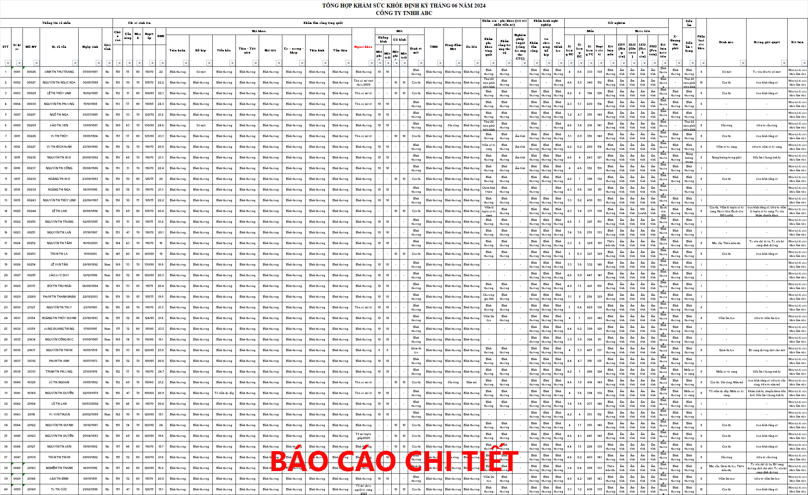
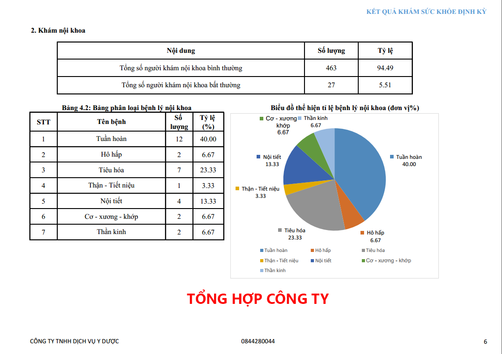
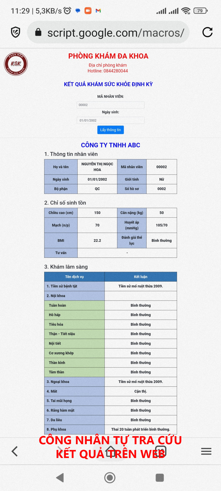

PHẦN MỀM KSK
HỖ TRỢ KHÁM SỨC KHỎE DOANH NGHIỆP
NHỮNG VẤN ĐỀ KHI KHÁM SỨC KHỎE DOANH NGHIỆP
1. Trong buổi khám
- Số lượng nhân viên, công nhân đông. Khó kiểm soát xem ai đã khám, ai chưa khám.
- Danh mục khám của nhân viên không giống nhau. Khó biết nhân viên đã khám đủ các danh mục chưa.
- Dễ nhầm lẫn hồ sơ, ống xét nghiệm, kết quả của người này với người kia.
- Hạn chế về thời gian, dễ bị ùn tắc khi nhân viên đến khám đông.
- Hạn chế về máy móc, trang thiết bị, nhân lực ... khi di chuyển đến khám tại công ty.
2. Sau khi khám xong
- Số lượng giấy tờ (hồ sơ, kết quả xét nghiệm, kết quả siêu âm,...) rất nhiều, khó kiểm soát.
- Xử lý báo cáo phức tạp, mất rất nhiều thời gian, dễ dàng sai sót và khó sửa chữa.
- Dễ nhầm lẫn hồ sơ, ống xét nghiệm, kết quả của người này với người kia.
- Thời gian để hoàn thiện sau khám kéo dài không đáp ứng được yêu cầu công ty .
- Nhân viên công ty biết kết quả của mình muộn dẫn đến bệnh tình không được phát hiện và điều trị kịp thời.
Nếu không thể xử lý tốt các vấn đề trên sẽ ảnh hưởng đến uy tín bệnh viện, phòng khám
PHẦN MỀM KSK
Mục đích hướng đến:
- Giảm thời gian khám và hoàn thiện hồ sơ.
- Giảm nhân lực.
- Hạn chế sai sót.
1. Quản lý bằng mã vạch:
- Tất cả hồ sơ, ống xét nghiệm, kết quả siêu âm... đều phải có mã vạch.
- Thông báo kịp thời cho công ty những ai chưa khám, chưa xét nghiệm...
- Hạn chế việc thất lạc hồ sơ.
2. In code xét nghiệm trực tiếp trong buổi khám:
- Giảm sai sót do nhầm lẫn ống xét nghiệm giữa các nhân viên với nhau.
- Giảm thời gian nếu viết thông tin lên ống.
- Phòng xét nghiệm chạy xét nghiệm cũng nhanh hơn và hạn chế sai sót.
3. Hỗ trợ siêu âm:
- Trả kết quả siêu âm nhanh chóng.
- Không phải nhập lại thông tin nhân viên, hạn chế được sai sót.
- Kết quả được sử dụng để làm báo cáo sau này.
4. Sau buổi khám:
- Có thể kết hợp kết quả xét nghiệm, siêu âm, X-Quang, …
- Tự động đọc kết quả để đưa ra bệnh mắc, phân loại sức khỏe, tư vấn .
- Tạo báo cáo chi tiết và tổng hợp toàn công ty.
- Tạo báo cáo chi phí.
- Giảm 90% sai sót có thể xảy ra.
- Đẩy kết quả lên web để trong thời gian ngắn nhất. Nhân viên có thể tự tra cứu kết quả của mình.
- Tính tùy biến cao theo yêu cầu của đơn vị.



-
Quản lý thiết bị và bảo trì bảo dưỡng1


-
Quản lý thiết bị và bảo trì bảo dưỡng2
-
Quản lý thiết bị và bảo trì bảo dưỡng3

QUẢN LÝ CHẤT LƯỢNG
- Kiểm soát chất lượng toàn diện từ đầu vào tới đầu ra (IQC – PQC – OQC)
- Tích hợp 7QC Tool, giúp phân tích nguyên nhân lỗi/hỏng, hỗ trợ cải tiến chất lượng
- Tích hợp bộ Smart-KPIs trực quan hóa quản lý chất lượng thông minh
- Quản lý hồ sơ sản xuất xuyên suốt chuỗi cung ứng nội bộ, truy xuất nguồn gốc sản phẩm theo 5M1E
- Kết nối các thiết bị IoT và công nghệ 4.0, thu thập dữ liệu tự động, giúp phát hiện các lỗi sản xuất
QUẢN LÝ CHẤT LƯỢNG
- Kiểm soát chất lượng toàn diện từ đầu vào tới đầu ra (IQC – PQC – OQC)
- Tích hợp 7QC Tool, giúp phân tích nguyên nhân lỗi/hỏng, hỗ trợ cải tiến chất lượng
- Tích hợp bộ Smart-KPIs trực quan hóa quản lý chất lượng thông minh
- Quản lý hồ sơ sản xuất xuyên suốt chuỗi cung ứng nội bộ, truy xuất nguồn gốc sản phẩm theo 5M1E
- Kết nối các thiết bị IoT và công nghệ 4.0, thu thập dữ liệu tự động, giúp phát hiện các lỗi sản xuất
QUẢN LÝ CHẤT LƯỢNG
- Kiểm soát chất lượng toàn diện từ đầu vào tới đầu ra (IQC – PQC – OQC)
- Tích hợp 7QC Tool, giúp phân tích nguyên nhân lỗi/hỏng, hỗ trợ cải tiến chất lượng
- Tích hợp bộ Smart-KPIs trực quan hóa quản lý chất lượng thông minh
- Quản lý hồ sơ sản xuất xuyên suốt chuỗi cung ứng nội bộ, truy xuất nguồn gốc sản phẩm theo 5M1E
- Kết nối các thiết bị IoT và công nghệ 4.0, thu thập dữ liệu tự động, giúp phát hiện các lỗi sản xuất